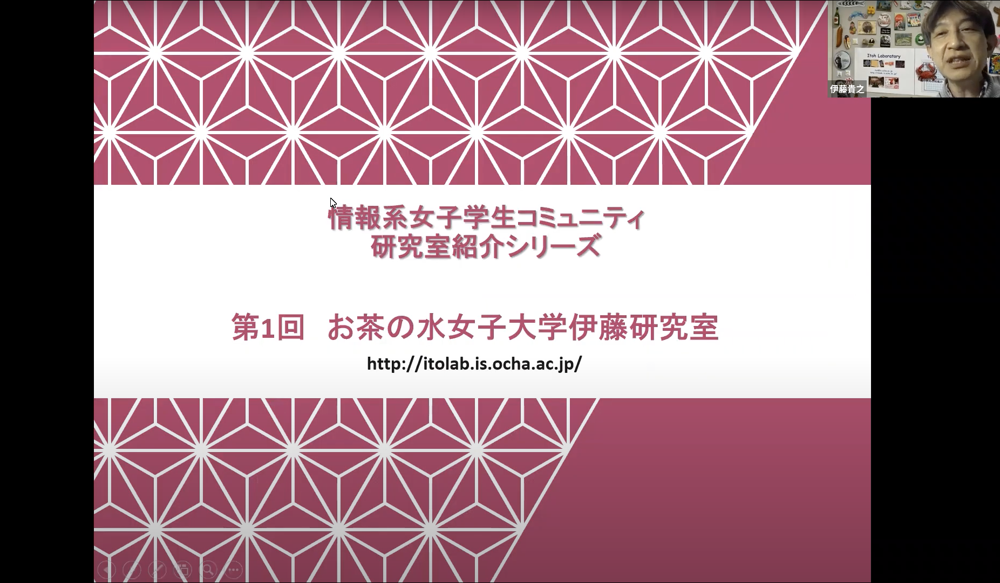

これまでの活動
- 2022年1月11日 [男女共同参画についての取り組み事例]を掲載しました。
- 2021年12月27日 [研究室紹介シリーズ(2) 明治大中村研(2021/12/27)]を開催しました。
- 2021年10月26日 [研究室紹介シリーズ(1) お茶大伊藤研 (2021/10/26)]を開催しました。 
- 2021年08月23日 情報処理学会ヒューマンコンピュータインタラクション研究会後の、HCIPにて、WomensCommunity設立の経緯や現状などを報告
- 2021年04月23日 Slack オープン
メンバーの増え具合
- 452名（2023.03.20現在)
- 430名（2023.02.28現在）
- 416名（2022.08.02現在）
- 415名 (2022.06.22現在）
- 406名（2022.04.12現在）
- 393名 (2022.02.25現在）
- 378名（2022.01.11現在）
- 351名（2021.10.27現在)
- 281名（2021.09.21現在）